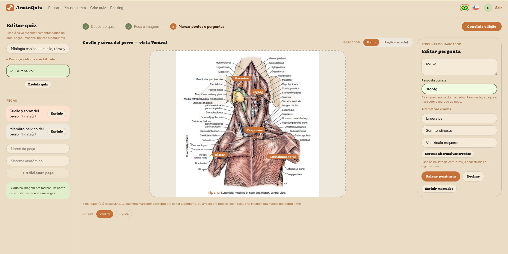
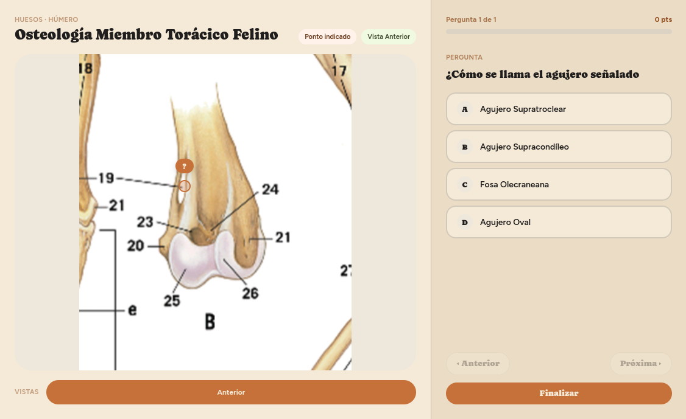
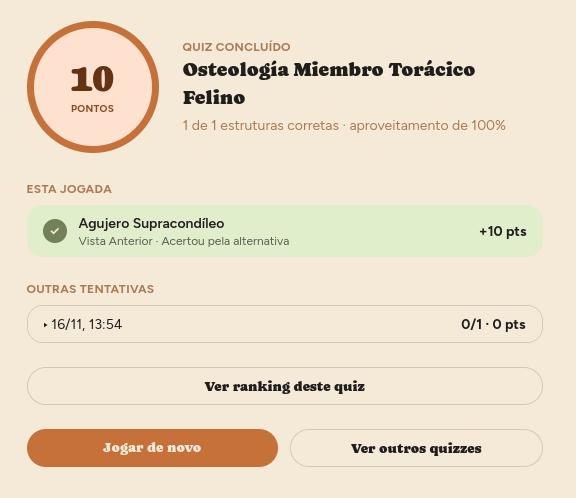

Estudantes de Medicina Veterinária
Revisam peças anatômicas no próprio ritmo, testam o que sabem e veem a evolução da pontuação.
O AnatoQuiz é um quiz interativo de Anatomia Veterinária que troca o atlas estático por autoavaliação visual: fotos reais das peças, estruturas marcadas na imagem e feedback na hora.
✓ Acertou de primeira! +20 pontos
Para quem é
A finalidade do AnatoQuiz é apoiar o estudo da disciplina ZOO-00171 – Anatomía de Animales de Compañía (Universidad Santo Tomás, Chile), transformando atlas, livros e slides numa ferramenta de autoavaliação visual.
Revisam peças anatômicas no próprio ritmo, testam o que sabem e veem a evolução da pontuação.
Montam quizzes com as fotos das peças usadas em aula e compartilham com a turma.
Interface em português e espanhol, pra estudar o mesmo conteúdo dos dois lados da parceria.
Principais funcionalidades
Envie fotos anterior, posterior e laterais da mesma peça anatômica.
Clique pra marcar um ponto ou arraste pra marcar uma região da imagem.
Acertou ou errou, você sabe na hora e já parte pra próxima estrutura.
Pontuação por quiz, histórico pessoal e ranking geral e por quiz.
Busque quizzes criados por colegas e professores e jogue quando quiser.
Interface bilíngue, feita pra turma Brasil–Chile estudar junta.
Como funciona
Tudo é salvo automaticamente: dados do quiz, peças, imagens, pontos e perguntas.
Dê um título, uma descrição e escolha se ele é público.
Cadastre a peça (ex: “Fêmur”), o sistema anatômico e envie as fotos de cada ângulo.
Marque as estruturas na imagem e escreva uma pergunta de múltipla escolha pra cada uma.
Dois jeitos de jogar
Veja 4 alternativas e escolha a estrutura certa. Ótimo pra revisar e fixar nomes.
Digite o nome da estrutura antes de ver as alternativas. Acertou de primeira? Pontuação em dobro.
Por dentro do app



Vídeo de demonstração
Como o app apoia a aprendizagem de anatomia, do cadastro da peça à revisão antes da prova.
Vídeo de demonstração em breve
Sobre
O AnatoQuiz nasceu no programa COIL UFSM–UST 2026 (Collaborative Online International Learning), parceria entre a Universidade Federal de Santa Maria (Brasil) e a Universidad Santo Tomás de Santiago (Chile).
Do lado chileno, estudantes de Medicina Veterinária trouxeram o problema, as peças e os testes de uso. Do lado brasileiro, a equipe de Projeto de Software II (UFSM) desenhou e desenvolveu a aplicação.
Making of: equipes, arquitetura, desafios e aprendizados
Projeto de Software II
Anatomía de Animales de Compañía
Crie sua conta em segundos e jogue o primeiro quiz.